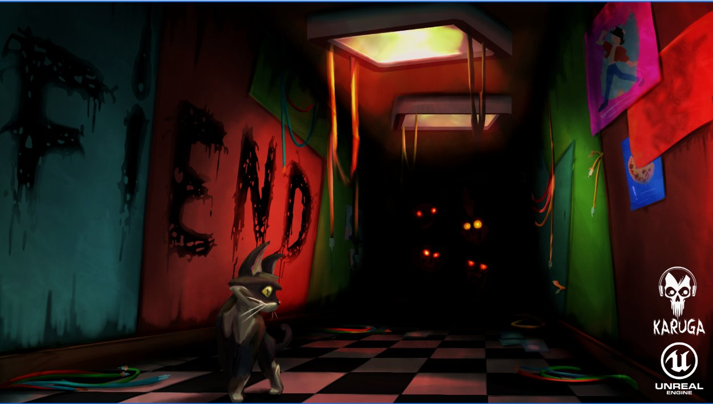
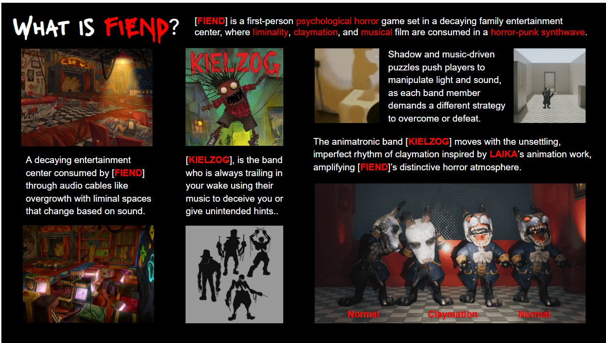
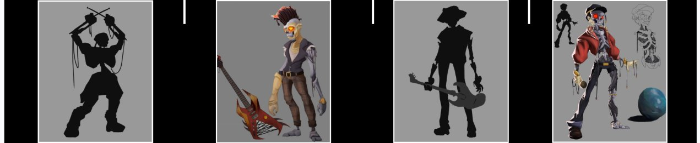
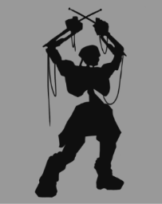
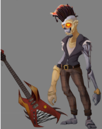
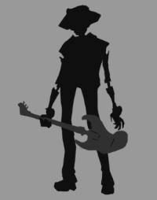
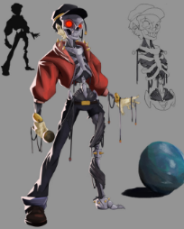
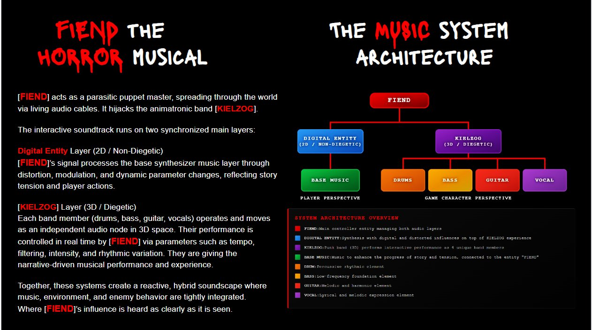
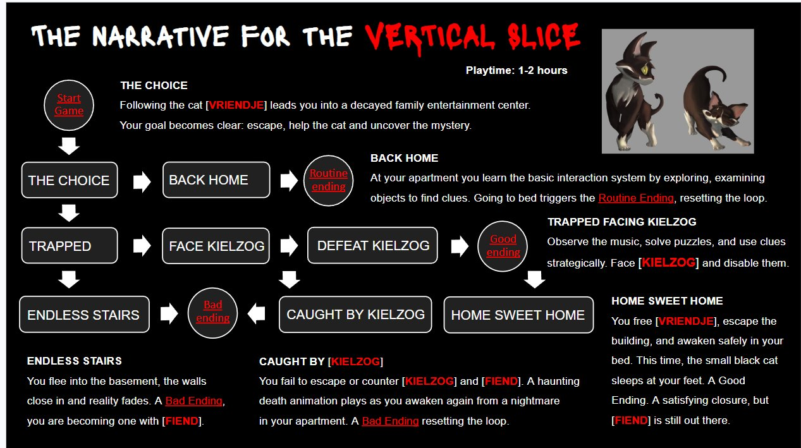

✕
A first-person psychological horror game set in a decaying family entertainment center — where liminality, claymation, and musical film collapse into horror-punk synthwave.
[FIEND] is a parasitic puppet master — spreading through a decaying family entertainment center via living audio cables. It hijacks the animatronic band [KIELZOG], turning their music into a weapon against you.
The environment consumes itself through audio cables like overgrowth, with liminal spaces that shift based on sound. Every corridor breathes. Every note is a threat.
Follow the cat [VRIENDJE] into the darkness. Escape, help her, and uncover what FIEND truly is.
Shadow and music puzzles — manipulate light and sound to survive each band member.
KIELZOG moves with the unsettling imperfect rhythm of LAIKA-inspired animation.
Rooms that defy logic. A decayed entertainment center consumed by dread.
Music, environment, and enemy behavior are woven into one living system.


[KIELZOG] is always trailing in your wake — using their music to deceive you or give unintended hints. Hijacked by [FIEND], performing as puppets in a horror show with no exit. Each member demands a different strategy to defeat.


Fast, chaotic, and easily distracted. Hear the rhythm building? That's him closing in — chasing every sound you make.
Relies entirely on sound. Chases any noise — very predictable, but relentless once locked on.

Silent. Brooding. Lurks in the shadows — you won't hear him coming, only feel the bass resonating in your chest.
Sticks to the background. Hates sudden noises. The best way to avoid him is hiding, not running.

Aggressive, destructive, unpredictable. His riff is his fury — few who've heard his solo have been seen again.
Easily provoked and blinded by rage. Use that uncontrolled fury against him.

Jealous, envious, attention-seeking, narcissistic. He craves your gaze. Look at him while he sings — or you die.
If you look at him while he sings, he stays calm. Do. Not. Turn away.

The interactive soundtrack runs on two synchronized layers — a hybrid soundscape where music, environment, and enemy behavior are tightly integrated. FIEND's influence is heard as clearly as it is seen.
Digital Entity Layer (2D / Non-Diegetic): FIEND's signal processes the base synthesizer through distortion, modulation, and dynamic parameter changes — reflecting story tension and player actions in real time.
KIELZOG Layer (3D / Diegetic): Each band member operates as an independent audio node in 3D space. Their performance is controlled by FIEND via tempo, filtering, intensity, and rhythmic variation — a narrative-driven musical performance that bleeds into gameplay.
FIEND — Main controller managing both audio layers
Digital Entity — Synthesis with distorted influences
KIELZOG — 3D punk band performing as 4 audio nodes
Base Music — Enhances story progress and tension
Drums — Percussive rhythmic element
Bass — Low-frequency foundation element
Guitar — Melodic and harmonic element
Vocal — Lyrical and melodic expression
The FIEND soundtrack is a living score — horror-punk synthwave that bends and distorts as the story unfolds. Every track is composed as part of the interactive music system.
Each piece was built to breathe inside the game's reactive audio engine. Listen, and hear what FIEND sounds like.
▶ Full Playlist on YouTube
Following the cat [VRIENDJE] leads you into a decayed family entertainment center. Your goal becomes clear: escape, help the cat, and uncover the mystery of FIEND. Three endings await — only one is a true escape.
You free [VRIENDJE], escape the building, and awaken safely in your bed. The small black cat sleeps at your feet. FIEND is still out there.
You fail to escape KIELZOG and FIEND. A haunting death animation plays as you awaken from a nightmare. The loop resets.
You flee into the basement. The walls close in and reality fades. You are becoming one with [FIEND].
A playable build of FIEND is live in your browser. Step into the entertainment center. Follow the cat. Survive the band.
▶ PLAY FIEND NOWFIEND occupies a unique position in the indie horror market — combining the genre tension of Five Nights at Freddy's with the sound-driven design of Hellblade, wrapped in a visual language inspired by LAIKA studios and 90s claymation horror.
The reactive music system is not a feature — it's the core mechanic. No other horror game makes the soundtrack itself the enemy.
FIEND is currently in vertical slice phase and seeking publishing partnerships, funding, and co-development opportunities.